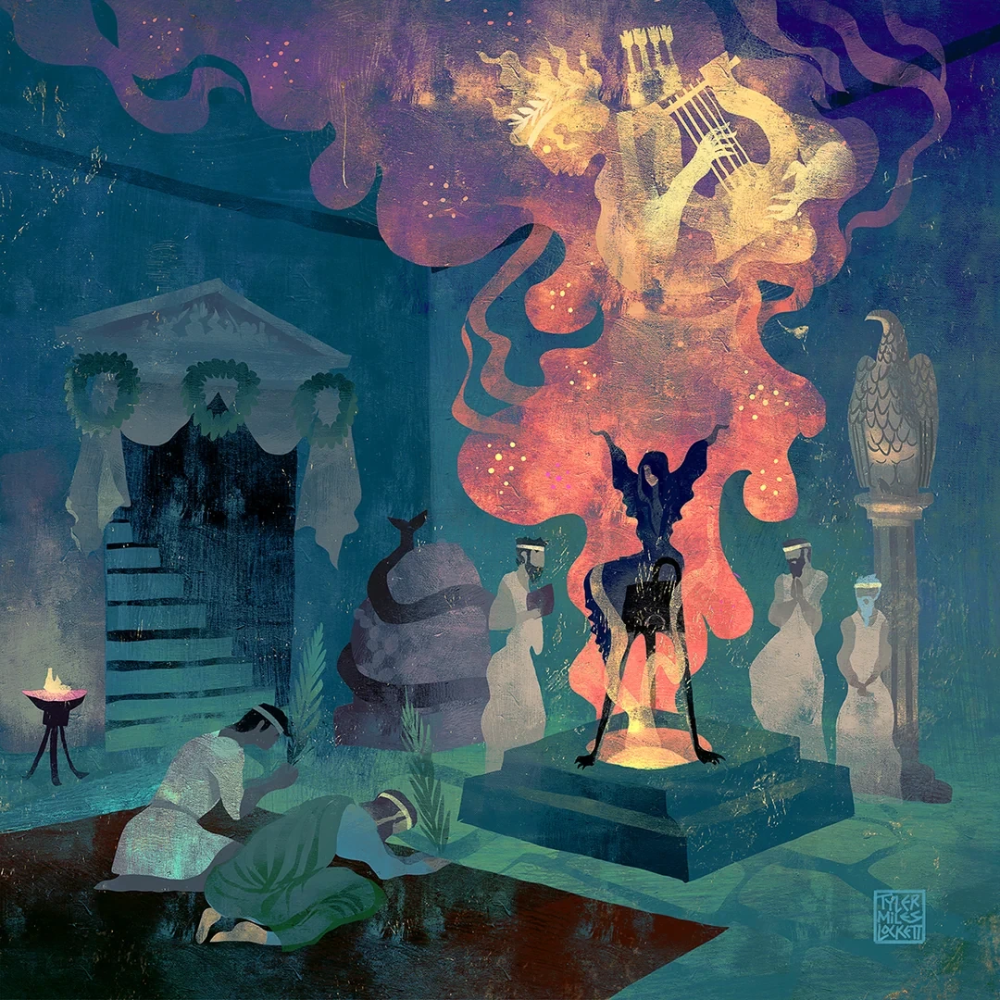

На доске Кассия написала один вопрос: «Если тебе сообщили твоё будущее, что ты теперь можешь сделать?» Отошла на пару шагов, посмотрела на написанное и добавила ниже: «И стоило вообще спрашивать?»
— Добрый день, ласточки мои! Сегодня у нас судьба, пророчества и люди, которые всеми силами пытались с этими пророчествами разобраться. Некоторые даже обращались за ними добровольно, а затем обнаруживали, что узнать будущее и обрадоваться ему — совершенно разные вещи. Я бы, например, сначала уточнила, можно ли вернуть предсказание обратно и получить деньги за консультацию.
Кассия присела на край преподавательского стола, не спеша открывать лежавшую рядом книгу. — Пророчество — это сообщение о будущем, иногда очень конкретное, иногда такое, что смысл становится ясен уже после происшествия. Оракулом греки могли назвать и место, где обращались за ответом к божеству, и сам ответ, а в некоторых случаях и того, кто его передавал. Наверняка вы слышали о Дельфах и Пифии, через которую вопрошавшие получали ответы Аполлона. Но судьба — вещь более широкая, чем одно предсказание.

— Само слово «мойра» у греков означало долю, то, что человеку досталось. Позднее судьбу стали изображать в виде трёх богинь, которых так и называли — Мойры. Клото пряла нить человеческой жизни, Лахесис определяла, какая доля кому выпадет, а Атропос эту нить обрывала. И вот что интересно: даже сами древние греки не могли окончательно договориться, кто же всё-таки распоряжается судьбой. Может ли Зевс изменить предначертанное? Или даже ему приходится подчиняться? У разных авторов на этот счёт встречаются разные представления, поэтому и мы пока не будем пытаться решить за них этот вопрос.
Кассия написала на доске имя «Акрисий» и рядом, чуть ниже, «Даная».
— Начнём с царя Аргоса. У Акрисия была дочь Даная, и однажды он решил узнать, что ждёт его род. Ответ вышел неутешительный: сын Данаи станет причиной его смерти. Обратите внимание, ему не сказали, что дочь собирается его убивать, не назвали день и не объяснили, при каких обстоятельствах он погибнет. Но Акрисий, разумеется, решил, что лучше всякого оракула знает, как именно этого не допустить.
Он запер Данаю, рассчитывая, что у неё просто не появится ребёнка. Однако Зевс добрался до девушки в облике золотого дождя, и у неё родился Персей. Акрисий не захотел убивать дочь и внука собственными руками, зато распорядился посадить обоих в деревянный ларь и отправить в море, что, согласитесь, тоже не очень тянет на заботливое решение проблем. Даная с младенцем выжили и оказались на острове Сериф, где Персей вырос. Позднее у него будут и Горгона Медуза, и Андромеда, и множество неприятностей, но нам сейчас нужен совсем другой эпизод его жизни.
По версии, которую приводит Псевдо-Аполлодор, Акрисий, узнав о возвращении Персея, бежал в Лариссу. Там проводились состязания, в которых участвовал и его внук. Персей метнул диск и случайно попал в деда; Акрисий умер. У Гигина место событий и обстоятельства немного другие: Акрисий находится на Серифе, Персей даже обещает не причинять ему зла, а во время погребальных игр диск отклоняется ветром и поражает царя. Исход остаётся прежним, хотя дорога к нему рассказана иначе.
— И ведь Акрисий не сидел сложа руки, дожидаясь предсказанной смерти, он принимал решения, причём одно хуже другого. А Персей не рос с мечтой отыскать дедушку и метнуть в него спортивный снаряд. Можно ли сказать, что всё случилось исключительно по воле судьбы? Смерть Акрисия была предсказана, но запереть Данаю и отправить ребёнка в море он решил сам. Пророчество ничего такого от него не требовало. Мы ещё вернёмся к этой разнице между будущим, которое человеку обещали, и поступками, которые он совершил из страха перед ним.
— А теперь представьте, что вам сообщили не один исход, а сразу два, и предложили выбирать. Звучит получше, правда? Вот только оба варианта могут оказаться не такими уж и приятными.
Рядом с именем Акрисия появилось другое — «Ахилл». Кассия провела под ним две линии, расходящиеся в разные стороны.
— Ахилл, сын смертного Пелея и морской богини Фетиды, воюет под Троей и знает от матери о двух возможных участях. Если он останется и будет сражаться, то погибнет молодым, зато его слава переживёт его. Если вернётся домой, проживёт долгую жизнь, но прославиться таким образом ему уже не удастся. Знакомое желание получить всё сразу здесь не работает: либо жизнь, либо слава, по крайней мере в тех пределах, о которых говорит Фетида.
Кассия задумчиво посмотрела на две линии.
— Мне даже немного жаль Ахилла. Со стороны выбор кажется очевидным, пока не выясняется, что выбирать придётся тебе самому, а не герою, о котором через несколько тысяч лет будут читать на занятиях. И вопрос здесь не в том, какой вариант «правильный». В отличие от Акрисия, Ахилл знает два возможных пути. Ему не нужно разгадывать, кто собирается его убить; он должен решить, какую жизнь считает своей и что готов за неё отдать. Поэтому судьба у греков вовсе не всегда выглядит как единственная дорога, с которой нельзя свернуть.
— С одним царём, пытавшимся избежать предсказания о гибели от руки потомка, мы уже познакомились. Давайте посмотрим, как похожая беда однажды разрослась на два поколения семьи. Здесь, боюсь, всё будет ещё запутаннее.
Кассия написала «Лай — Иокаста — Эдип».
Лаю, царю Фив, предсказали смерть от руки собственного сына. Когда у него и Иокасты родился ребёнок, мальчика приказали оставить умирать. Однако тот выжил, попал в Коринф и вырос при дворе Полиба и Меропы, считая их родными родителями. Уже взрослым он услышал сомнения относительно своего происхождения и отправился к оракулу. Вместо внятного ответа о семье ему сообщили, что он убьёт отца и женится на матери. Эдип решил держаться подальше от Коринфа, поскольку был уверен, что речь идёт о людях, которые его воспитали.
— И ведь посмотрите, насколько разумным кажется его решение, если знать только то, что знал он сам. Человек получает страшное предсказание и уезжает, чтобы не причинить вреда близким. Вот только с исходными данными ему очень не повезло.
По дороге Эдип поссорился с незнакомым мужчиной и его спутниками и убил его, не подозревая, что это Лай, его настоящий отец. Затем добрался до Фив, где жителей терзал Сфинкс, задававший загадку и губивший тех, кто не находил ответа. Эдип разгадал её, избавил город от бедствия, получил царскую власть и женился на овдовевшей Иокасте. Так он оказался мужем собственной матери, и ни один из них этого не понимал. Позже в трагедии Софокла «Царь Эдип» мы наблюдаем уже не исполнение новой угрозы, а выяснение давно случившегося: Эдип пытается спасти Фивы от бедствия, ищет виновного в смерти Лая и постепенно обнаруживает, что расследует собственную жизнь.
— Про Эдипа любят говорить «от судьбы не убежишь», и к этой истории фраза, конечно, подходит. Но если только её и запомнить, мы потеряем самое интересное. Эдип не знал, что встреченный им путник — его отец, а женщина, на которой он женится, — мать. И всё-таки ссору на дороге он затеял не по приказу оракула. Незнание делает его положение страшным, но не превращает каждый его поступок в действие, за которое никто не отвечает.
— Вопрос не только в том, сбудется пророчество или нет. Важно и то, насколько человек понимает, что делает. А чтобы не вышло, что все мои примеры исключительно о людях, попавших в беду из-за недостатка сведений, вспомним того, кого предупредили вполне недвусмысленно.
Например, в самом начале «Одиссеи» Зевс жалуется, что люди постоянно обвиняют богов во всех своих бедах, хотя частенько сами делают всё возможное, чтобы нажить себе неприятности. И приводит в пример одного весьма предприимчивого мужчину по имени Эгист. Для начала познакомимся с остальными участниками этой истории. Агамемнон был царём Микен и одним из главных предводителей греческого войска во время Троянской войны. Пока он находился на войне, дома оставалась его жена Клитемнестра. Вот с ней Эгист и завёл роман, а заодно задумал избавиться от её законного супруга. Причём боги прекрасно знали, чем всё закончится, и даже отправили Гермеса предупредить Эгиста, чтобы тот не убивал Агамемнона и не женился на Клитемнестре. Иначе за отца отомстит Орест, сын Агамемнона и Клитемнестры.
— То есть человеку заранее сообщили не только о последствиях, но и о том, кто именно придёт за его головой. Казалось бы, прекрасная возможность пересмотреть свои планы! Однако Эгист решил, что предупреждение его совершенно не касается, и всё равно поступил по-своему. Впоследствии Орест действительно отомстил за смерть отца. Поэтому Зевс и возмущался: богов предупредить попросили, они предупредили, а виноваты в итоге опять они.
Кассия ненадолго замолчала, давая студентам закончить записи, после чего взяла со стола другую карточку.
— Осталась Кассандра. Возможно, вы знаете о ней меньше, чем об Эдипе, но её история по-своему ещё обиднее. Когда тебе не верят, хотя ты права, очень хочется предъявить всем доказательства. А вот когда доказательство — будущий ужас, радости от собственной правоты уже мало.
Кассандра была дочерью троянского царя Приама и обладала пророческим даром, но окружающие не верили её словам. После падения Трои она оказалась пленницей Агамемнона и вместе с ним отправилась в Микены. В трагедии Эсхила «Агамемнон» она понимает, что ждёт её в доме, куда её привели: гибель самого царя, собственная смерть, давние преступления этой семьи и будущая расплата. Кассандра видит то, чего не понимают другие, но не может заставить их принять её слова и предотвратить происходящее.
Кассия вернулась к доске, на которой всё ещё оставался первый вопрос, и дописала к нему ещё один: «За что человек отвечает, даже если знает, чем всё закончится?»
Она отложила мел, вытирая пальцы тряпочкой.
— Что ж, дорогие мои, на сегодня всё. Домашние задания уже ждут вас на столах. И если кто-нибудь после этой лекции всё-таки соберётся узнать своё будущее, не забудьте потом рассказать, стоило ли оно того. До встречи!